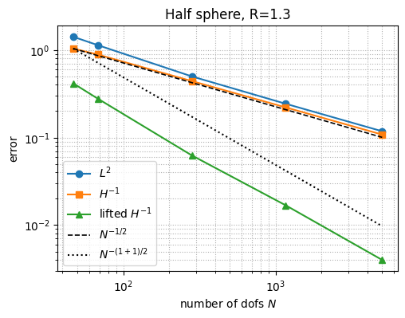
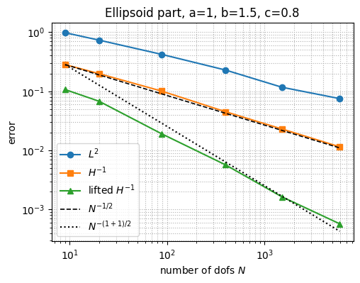
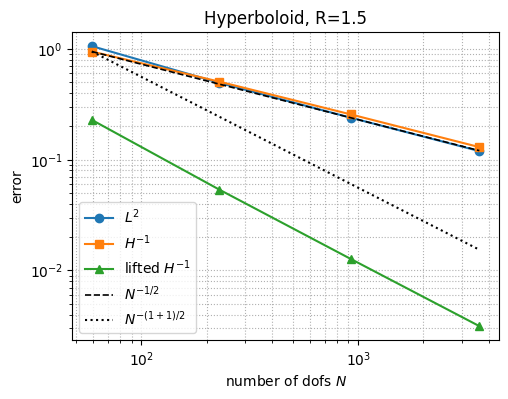
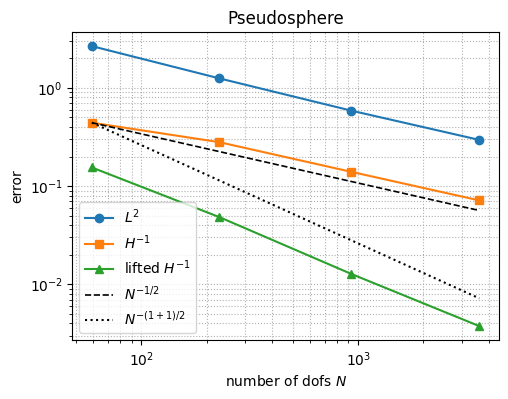

21. Numerical approximation of extrinsic curvature#
In this notebook we test the convergence of the lifted generalized Weingarten tensor for several geometries. The geometries are generated by plain functions so the construction is visible: first the reference domain, then the embedding, then the exact normal and Weingarten tensor used for the error computation.
import matplotlib.pyplot as plt
from netgen.occ import OCCGeometry, Circle, MoveTo, X, Y, Rectangle, IdentificationType, gp_Trsf
from ngsolve import *
from ngsolve.krylovspace import CGSolver
from ngsolve.webgui import Draw
21.1. Curvature, lifting, and convergence helpers#
def exact_weingarten_from_normal(normal, coords=(x, y, z), transpose=True):
P = Id(3) - OuterProduct(normal, normal)
Dnormal = CF(tuple(normal.Diff(coord) for coord in coords), dims=(3, 3))
if transpose:
Dnormal = Dnormal.trans
return P * Dnormal * P
def compute_lifted_shape_operator(mesh, order, dirichlet=".*", K_ex=None, neumann="", nv_ex=None):
if order < 1:
raise ValueError("Order must be at least 1")
n = specialcf.normal(3)
t = specialcf.tangential(3)
mu = Cross(n, t)
ind_neumann = GridFunction(FacetSurface(mesh, order=0))
ind_neumann.Set(1, definedon=mesh.BBoundaries(neumann))
gf_average_nv = GridFunction(VectorFacetSurface(mesh, order=order - 1))
gf_average_nv.Set(n, dual=True, definedon=mesh.Boundaries(".*"))
cf_average_nv = Normalize(gf_average_nv)
fes = Periodic(HDivDivSurface(mesh, order=order - 1, dirichlet_bbnd=dirichlet))
sigma, tau = fes.TnT()
sigma, tau = sigma.Trace(), tau.Trace()
mass = BilinearForm(
InnerProduct(sigma, tau) * ds,
symmetric=True,
symmetric_storage=True,
condense=order > 1,
)
rhs = LinearForm(fes)
rhs += InnerProduct(Grad(n), tau) * ds
rhs += (1 - ind_neumann) * (pi / 2 - acos(cf_average_nv * mu)) * tau[mu, mu] * ds(element_boundary=True)
if nv_ex:
rhs += -ind_neumann * (n - nv_ex) * mu * tau[mu, mu] * ds(element_boundary=True)
gf_kappa = GridFunction(fes)
if K_ex:
gf_kappa.Set(K_ex, definedon=mesh.Boundaries(".*"), dual=True)
pre = Preconditioner(mass, "bddc")
mass.Assemble()
rhs.Assemble()
residual = gf_kappa.vec.CreateVector()
mass.Apply(gf_kappa.vec, residual)
residual.data -= rhs.vec
if mass.condense:
invS = CGSolver(mass.mat, pre.mat, printing=False, maxiter=400)
ext = IdentityMatrix() + mass.harmonic_extension
inv = mass.inner_solve + ext @ invS @ ext.T
else:
inv = mass.mat.Inverse(fes.FreeDofs(), inverse="sparsecholesky")
gf_kappa.vec.data -= inv * residual
return gf_kappa
def compute_hm1_norm(func_vol, func_bnd, ex_solution, mesh, order):
fes = H1(mesh, order=order, dirichlet_bbnd=".*")
u, v = fes.TnT()
form = BilinearForm(fes, symmetric=True, symmetric_storage=True, condense=True)
form += (u * v + Grad(u).Trace() * Grad(v).Trace()) * ds
pre = Preconditioner(form, "bddc")
form.Assemble()
invS = CGSolver(form.mat, pre, printing=False, maxiter=600)
if form.condense:
ext = IdentityMatrix() + form.harmonic_extension
inv = form.inner_solve + ext @ invS @ ext.T
else:
inv = invS
rhs = MultiVector(fes.ndof, 6, False)
gf_lift = GridFunction(fes**6)
for i in range(6):
j = i if i < 3 else (i + 1 if i < 5 else 8)
linear = LinearForm(
InnerProduct(func_vol[j] - ex_solution[j], v) * ds
+ InnerProduct(func_bnd[j], v) * ds(element_boundary=True)
).Assemble()
rhs[i].data = linear.vec
lift_vecs = (inv * rhs).Evaluate()
for i in range(6):
gf_lift.components[i].vec.data = lift_vecs[i]
index_sym_matrix = [0, 1, 2, 1, 3, 4, 2, 4, 5]
lifted = CF(tuple(gf_lift.components[i] for i in index_sym_matrix), dims=(3, 3))
grad_lifted = CF(tuple(Grad(gf_lift.components[i]) for i in index_sym_matrix), dims=(3, 3, 3))
return sqrt(Integrate(InnerProduct(lifted, lifted) + InnerProduct(grad_lifted, grad_lifted), mesh, BND))
def compute_hm1_error(mesh, order, K_ex, K_lifted=None):
if order < 1:
raise ValueError("Order must be at least 1")
n = specialcf.normal(3)
t = specialcf.tangential(3)
mu = Cross(n, t)
gf_average_nv = GridFunction(VectorFacetSurface(mesh, order=order - 1))
gf_average_nv.Set(n, dual=True, definedon=mesh.Boundaries(".*"))
cf_average_nv = Normalize(gf_average_nv)
if K_lifted:
vol_term = K_lifted
bnd_term = CF(0) * OuterProduct(mu, mu)
else:
vol_term = Grad(n)
bnd_term = (pi / 2 - acos(cf_average_nv * mu)) * OuterProduct(mu, mu)
return compute_hm1_norm(vol_term, bnd_term, K_ex, mesh, order=order + 2)
def compute_lifted_curvature_convergence(example, order=3, canonical_interp=False, maxhs=None, draw_last=False):
if maxhs is None:
maxhs = [2 ** (-i) for i in range(5)]
l2err = []
hm1err = []
hm1liftederr = []
l2rate = []
hm1rate = []
hm1liftedrate = []
ndof = []
last = None
with TaskManager():
for maxh in maxhs:
print(f"{example['name']}: maxh={maxh:.4f}")
mesh = Mesh(example["geometry"].GenerateMesh(maxh=maxh))
gf_Phi = GridFunction(VectorH1(mesh, order=order))
gf_Phi.Set(
example["embedding"] - CF((x, y, 0)),
definedon=mesh.Boundaries(".*"),
dual=canonical_interp,
)
mesh.SetDeformation(gf_Phi)
K_lifted = compute_lifted_shape_operator(
mesh=mesh,
order=order,
dirichlet=example["boundaries"][0],
K_ex=example["Weingarten"],
neumann="|".join(example["boundaries"][1:]) if len(example["boundaries"]) > 1 else "",
nv_ex=example["normal"],
)
l2err.append(
sqrt(
Integrate(
InnerProduct(K_lifted - example["Weingarten"], K_lifted - example["Weingarten"]),
mesh,
BND,
)
)
)
hm1err.append(compute_hm1_error(mesh=mesh, order=order, K_ex=example["Weingarten"]))
hm1liftederr.append(
compute_hm1_error(mesh=mesh, order=order, K_ex=example["Weingarten"], K_lifted=K_lifted)
)
if len(l2err) > 1:
l2rate.append(log(l2err[-2] / l2err[-1]) / log(maxhs[len(l2err) - 2] / maxhs[len(l2err) - 1]))
hm1rate.append(log(hm1err[-2] / hm1err[-1]) / log(maxhs[len(hm1err) - 2] / maxhs[len(hm1err) - 1]))
hm1liftedrate.append(
log(hm1liftederr[-2] / hm1liftederr[-1])
/ log(maxhs[len(hm1liftederr) - 2] / maxhs[len(hm1liftederr) - 1])
)
ndof.append(K_lifted.space.ndof)
last = (mesh, K_lifted)
mesh.UnsetDeformation()
result = {
"name": example["name"],
"order": order,
"maxhs": maxhs,
"l2err": [float(v) for v in l2err],
"hm1err": [float(v) for v in hm1err],
"hm1liftederr": [float(v) for v in hm1liftederr],
"l2rate": [float(v) for v in l2rate],
"hm1rate": [float(v) for v in hm1rate],
"hm1liftedrate": [float(v) for v in hm1liftedrate],
"ndof": ndof,
}
if draw_last and last is not None:
mesh, K_lifted = last
Draw(0.5 * Trace(K_lifted), mesh, f"mean curvature, {example['name']}", deformation=gf_Phi)
return result
def plot_convergence(result):
ndof = result["ndof"]
order = result["order"]
fig, ax = plt.subplots(figsize=(5.5, 4))
ax.loglog(ndof, result["l2err"], "o-", label="$L^2$")
ax.loglog(ndof, result["hm1err"], "s-", label="$H^{-1}$")
ax.loglog(ndof, result["hm1liftederr"], "^-", label="lifted $H^{-1}$")
if ndof and result["hm1err"]:
ref_k = [result["hm1err"][0] * (ndof[0] / n) ** (order / 2) for n in ndof]
ref_kp1 = [result["hm1err"][0] * (ndof[0] / n) ** ((order + 1) / 2) for n in ndof]
ax.loglog(ndof, ref_k, "k--", lw=1.2, label=rf"$N^{{-{order}/2}}$")
ax.loglog(ndof, ref_kp1, "k:", lw=1.5, label=rf"$N^{{-({order}+1)/2}}$")
ax.grid(True, which="both", ls=":", lw=0.8)
ax.set_xlabel("number of dofs $N$")
ax.set_ylabel("error")
ax.set_title(result["name"])
ax.legend()
plt.show()
def print_result(result):
print(result["name"])
print(" L2 errors: ", result["l2err"])
print(" L2 rates: ", result["l2rate"])
print(" H-1 errors: ", result["hm1err"])
print(" H-1 rates: ", result["hm1rate"])
print(" lifted H-1 errors:", result["hm1liftederr"])
print(" lifted H-1 rates: ", result["hm1liftedrate"])
print(" Number of dofs:", result["ndof"])
plot_convergence(result)
21.2. Geometry generators#
Each function returns a dictionary containing the reference-domain geometry, the embedding into \(\mathbb R^3\), the exact normal, the exact Weingarten tensor, and the boundary names used by the lifting routine.
def make_half_sphere(radius=1.3):
R = radius
r_ref = sqrt(x**2 + y**2)
phi = atan2(y, x)
embedding = R * CF((cos(phi) * sin(r_ref * pi / 2), sin(phi) * sin(r_ref * pi / 2), cos(r_ref * pi / 2)))
radius_ex = sqrt(x**2 + y**2 + z**2)
x_ex = R * x / radius_ex
y_ex = R * y / radius_ex
z_ex = R * z / radius_ex
surface = x_ex**2 + y_ex**2 + z_ex**2 - R**2
normal = Normalize(CF((surface.Diff(x_ex), surface.Diff(y_ex), surface.Diff(z_ex))))
Weingarten = exact_weingarten_from_normal(normal, coords=(x_ex, y_ex, z_ex), transpose=True)
face = Circle((0, 0), R).Face()
face.edges.name = "bnd"
return {"name": f"Half sphere, R={R}", "geometry": OCCGeometry(face), "embedding": embedding, "normal": normal, "Weingarten": Weingarten, "boundaries": ["bnd"]}
def make_ellipsoid_part(a=1, b=1.5, c=0.8):
embedding = CF((a * cos(x) * sin(y), b * sin(x) * sin(y), c * cos(y)))
radius_ex = sqrt((x / a) ** 2 + (y / b) ** 2 + (z / c) ** 2)
x_ex = x / radius_ex
y_ex = y / radius_ex
z_ex = z / radius_ex
surface = x_ex**2 / a**2 + y_ex**2 / b**2 + z_ex**2 / c**2 - 1
normal = Normalize(CF((surface.Diff(x_ex), surface.Diff(y_ex), surface.Diff(z_ex))))
Weingarten = exact_weingarten_from_normal(normal, coords=(x_ex, y_ex, z_ex), transpose=True)
face = MoveTo(pi / 2, -pi / 2).Rectangle(pi / 2, pi / 2 - pi / 6).Face()
face.edges.Min(X).name = "left"
face.edges.Max(X).name = "right"
face.edges.Min(Y).name = "top"
face.edges.Max(Y).name = "bottom"
return {"name": f"Ellipsoid part, a={a}, b={b}, c={c}", "geometry": OCCGeometry(face), "embedding": embedding, "normal": normal, "Weingarten": Weingarten, "boundaries": ["left", "right", "top", "bottom"]}
def make_hyperboloid(R=1.5):
embedding = CF((R * cos(pi * x - pi / 2) * cosh(2 * y - 1), R * sinh(2 * y - 1), R * sin(-pi * x + pi / 2) * cosh(2 * y - 1)))
radius_ex = sqrt(x**2 / R**2 - y**2 / R**2 + z**2 / R**2)
x_ex = x / radius_ex
y_ex = y / radius_ex
z_ex = z / radius_ex
surface = x_ex**2 / R**2 - y_ex**2 / R**2 + z_ex**2 / R**2 - 1
normal = Normalize(CF((surface.Diff(x_ex), surface.Diff(y_ex), surface.Diff(z_ex))))
Weingarten = exact_weingarten_from_normal(normal, coords=(x_ex, y_ex, z_ex), transpose=True)
face = Rectangle(1, 1).Face()
face.edges.Min(X).name = "left"
face.edges.Max(X).name = "right"
face.edges.Min(Y).name = "bottom"
face.edges.Max(Y).name = "top"
return {"name": f"Hyperboloid, R={R}", "geometry": OCCGeometry(face), "embedding": embedding, "normal": normal, "Weingarten": Weingarten, "boundaries": ["left", "right", "bottom", "top"]}
def make_pseudosphere():
def gu(u):
return log(tan(u / 2)) + cos(u)
def acosh_cf(v):
return log(sqrt(1 / v - 1) * sqrt(1 / v + 1) + 1 / v)
u = pi / 9 - x * pi / 18
embedding = CF((sin(u) * cos(y * 2 * pi), sin(u) * sin(y * 2 * pi), gu(u)))
surface = (acosh_cf(sqrt(x**2 + y**2)) - sqrt(1 - x**2 - y**2)) ** 2 - z**2
normal = -Normalize(CF((surface.Diff(x), surface.Diff(y), surface.Diff(z))))
Weingarten = exact_weingarten_from_normal(normal, transpose=False)
face = Rectangle(1, 1).Face()
face.edges.Min(X).name = "left"
face.edges.Max(X).name = "right"
face.edges.Min(Y).name = "bottom"
face.edges.Max(Y).name = "top"
return {"name": "Pseudosphere", "geometry": OCCGeometry(face), "embedding": embedding, "normal": normal, "Weingarten": Weingarten, "boundaries": ["left", "right", "bottom", "top"]}
def make_catenoid():
embedding = CF((cosh(2 * (x - 0.5)) * cos(y * 2 * pi), cosh(2 * (x - 0.5)) * sin(y * 2 * pi), 2 * (x - 0.5)))
surface = x**2 + y**2 - cosh(z) ** 2
normal = -Normalize(CF((surface.Diff(x), surface.Diff(y), surface.Diff(z))))
Weingarten = exact_weingarten_from_normal(normal, transpose=False)
face = Rectangle(1, 1).Face()
face.edges.Min(X).name = "left"
face.edges.Max(X).name = "right"
face.edges.Min(Y).name = "bottom"
face.edges.Max(Y).name = "top"
return {"name": "Catenoid", "geometry": OCCGeometry(face), "embedding": embedding, "normal": normal, "Weingarten": Weingarten, "boundaries": ["left", "right", "bottom", "top"]}
def make_torus(R=1.0, r=0.3):
embedding = CF(((R + r * cos(y)) * cos(x), (R + r * cos(y)) * sin(x), r * sin(y)))
rho = sqrt(x**2 + y**2)
theta = atan2(y, x)
rho_ex = R + r * (rho - R) / sqrt((rho - R) ** 2 + z**2)
z_ex = r * z / sqrt((rho - R) ** 2 + z**2)
x_ex = rho_ex * cos(theta)
y_ex = rho_ex * sin(theta)
surface = (sqrt(x_ex**2 + y_ex**2) - R) ** 2 + z_ex**2 - r**2
normal = Normalize(CF((surface.Diff(x_ex), surface.Diff(y_ex), surface.Diff(z_ex))))
Weingarten = exact_weingarten_from_normal(normal, coords=(x_ex, y_ex, z_ex), transpose=True)
face = Rectangle(2 * pi, 2 * pi).Face()
face.edges.Min(X).name = "left"
face.edges.Max(X).name = "right"
face.edges.Min(Y).name = "bottom"
face.edges.Max(Y).name = "top"
face.edges[X <= 0].Identify(face.edges[X >= 2 * pi], "id_x", IdentificationType.PERIODIC, trafo=gp_Trsf.Translation(2 * pi * X))
face.edges[Y <= 0].Identify(face.edges[Y >= 2 * pi], "id_y", IdentificationType.PERIODIC, trafo=gp_Trsf.Translation(2 * pi * Y))
return {"name": f"Torus, R={R}, r={r}", "geometry": OCCGeometry(face), "embedding": embedding, "normal": normal, "Weingarten": Weingarten, "boundaries": ["left|right", "bottom|top"]}
def make_cylinder(r=1.0, H=1.4):
embedding = CF((r * cos(x / r), r * sin(x / r), y))
radius_ex = sqrt(x**2 + y**2)
x_ex = r * x / radius_ex
y_ex = r * y / radius_ex
z_ex = z
surface = x_ex**2 + y_ex**2 - r**2
normal = Normalize(CF((surface.Diff(x_ex), surface.Diff(y_ex), surface.Diff(z_ex))))
Weingarten = exact_weingarten_from_normal(normal, coords=(x_ex, y_ex, z_ex), transpose=True)
face = Rectangle(2 * pi * r, H).Face()
face.edges.Min(X).name = "left"
face.edges.Max(X).name = "right"
face.edges.Min(Y).name = "bottom"
face.edges.Max(Y).name = "top"
face.edges[X <= 0].Identify(face.edges[X >= 2 * pi * r], "id_x", IdentificationType.PERIODIC, trafo=gp_Trsf.Translation(2 * pi * r * X))
return {"name": f"Cylinder, r={r}, H={H}", "geometry": OCCGeometry(face), "embedding": embedding, "normal": normal, "Weingarten": Weingarten, "boundaries": ["left|right", "bottom", "top"]}
21.3. Experiment settings#
All experiments compute the \(L^2\) and \(H^{-1}\)-norm of the lifted Weingarten tensor \(\kappa_h\) and the \(H^{-1}\)-norm of the generalized Weingarten tensor. For dual=False the \(H^{-1}\)-norm rates of the generalized Weingarten tensor and the lifted Weingarten tensor coincide and are one order better than the \(L^2\)-norm of the lifted Weingarten tensor. If the canonical lagrange interpolation operator is used with dual=True both the \(L^2\)-norm and \(H^{-1}\)-norm of the lifted Weingarten tensor have an increased convergence rate, whereas the generalized Weingarten tensor has the same \(H^{-1}\)-norm.
order = 1
21.4. Half sphere#
maxhs = [2 ** (-i) for i in range(5)]
half_sphere_result = compute_lifted_curvature_convergence(
make_half_sphere(radius=1.3),
order=order,
canonical_interp = True,
maxhs=maxhs,
draw_last = True,
)
print_result(half_sphere_result)
Half sphere, R=1.3: maxh=1.0000
Half sphere, R=1.3: maxh=0.5000
Half sphere, R=1.3: maxh=0.2500
Half sphere, R=1.3: maxh=0.1250
Half sphere, R=1.3: maxh=0.0625
Half sphere, R=1.3
L2 errors: [1.4102379158749954, 1.1328655892835704, 0.49776185095970693, 0.2424658525105571, 0.11776155655615374]
L2 rates: [0.31596187438375845, 1.1864491305039941, 1.0376740839762382, 1.0419129347942995]
H-1 errors: [1.0350667731807077, 0.8851051056225717, 0.43987282907377356, 0.2204100530607327, 0.1079018320271181]
H-1 rates: [0.22580315088494313, 1.008762295624357, 0.9968964610218424, 1.030470667722433]
lifted H-1 errors: [0.41473446275135123, 0.27792890759723177, 0.06246668047922033, 0.016823590416636475, 0.004008546351933564]
lifted H-1 rates: [0.5774720361780795, 2.1535571268691838, 1.8926012340906508, 2.0693345703532957]
Number of dofs: [47, 68, 282, 1165, 4999]

21.5. Ellipsoid part#
maxhs = [2 ** (-i) for i in range(6)]
ellipsoid_part_result = compute_lifted_curvature_convergence(
make_ellipsoid_part(a=1, b=1.5, c=0.8),
order=order,
canonical_interp = False,
maxhs=maxhs,
draw_last = True,
)
print_result(ellipsoid_part_result)
Ellipsoid part, a=1, b=1.5, c=0.8: maxh=1.0000
Ellipsoid part, a=1, b=1.5, c=0.8: maxh=0.5000
Ellipsoid part, a=1, b=1.5, c=0.8: maxh=0.2500
Ellipsoid part, a=1, b=1.5, c=0.8: maxh=0.1250
Ellipsoid part, a=1, b=1.5, c=0.8: maxh=0.0625
Ellipsoid part, a=1, b=1.5, c=0.8: maxh=0.0312
Ellipsoid part, a=1, b=1.5, c=0.8
L2 errors: [0.9769764921696732, 0.732491783735543, 0.42061588522005083, 0.2282601903424305, 0.1167136092543703, 0.07508044064844262]
L2 rates: [0.4155112716418971, 0.8003092403597075, 0.8818240680867302, 0.9677064740302908, 0.6364637721183387]
H-1 errors: [0.28236830173014005, 0.19852063100847428, 0.10067478793530449, 0.04503942389019908, 0.022955731755741456, 0.01148622329955444]
H-1 rates: [0.5082891973367044, 0.9795865120921068, 1.160442154547184, 0.9723339523724185, 0.9989499072872543]
lifted H-1 errors: [0.10674674407845607, 0.06789264745748076, 0.01909107598693873, 0.005687673839113286, 0.0016343345008302595, 0.0005730603258415902]
lifted H-1 rates: [0.6528648172648174, 1.8303569275935292, 1.7469877755931498, 1.7991354441692462, 1.511944367455937]
Number of dofs: [9, 20, 88, 399, 1518, 5934]

21.6. Hyperboloid#
maxhs = [2 ** (-i) for i in range(2,6)]
hyperboloid_result = compute_lifted_curvature_convergence(
make_hyperboloid(R=1.5),
order=order,
canonical_interp = True,
maxhs=maxhs,
draw_last = True,
)
print_result(hyperboloid_result)
Hyperboloid, R=1.5: maxh=0.2500
Hyperboloid, R=1.5: maxh=0.1250
Hyperboloid, R=1.5: maxh=0.0625
Hyperboloid, R=1.5: maxh=0.0312
Hyperboloid, R=1.5
L2 errors: [1.0573989098342087, 0.49272913003828006, 0.2387479537568001, 0.119389383261597]
L2 rates: [1.1016530733317302, 1.045306397728288, 0.9998138180610787]
H-1 errors: [0.9449042641702161, 0.5050510654417869, 0.2556878544182583, 0.12970816302639765]
H-1 rates: [0.9037389003725302, 0.9820456334726517, 0.9791143551722644]
lifted H-1 errors: [0.22828358590375028, 0.0535420504982697, 0.012675628629977767, 0.0031449411036873235]
lifted H-1 rates: [2.0920828343206797, 2.078615093449807, 2.010952392773589]
Number of dofs: [59, 229, 926, 3625]

21.7. Pseudosphere#
maxhs = [2 ** (-i) for i in range(2,6)]
pseudosphere_result = compute_lifted_curvature_convergence(
make_pseudosphere(),
order=order,
canonical_interp = True,
maxhs=maxhs,
draw_last = True,
)
print_result(pseudosphere_result)
Pseudosphere: maxh=0.2500
Pseudosphere: maxh=0.1250
Pseudosphere: maxh=0.0625
Pseudosphere: maxh=0.0312
Pseudosphere
L2 errors: [2.664402160323283, 1.2500265613033739, 0.5882692058273764, 0.295564887442557]
L2 rates: [1.091853106326494, 1.0874103279762077, 0.9930016271781534]
H-1 errors: [0.44264403129139035, 0.2801251660297776, 0.1401193729151179, 0.07153440615410697]
H-1 rates: [0.6600753691886401, 0.999415162134313, 0.9699472246628766]
lifted H-1 errors: [0.15485270573424229, 0.04834079773680152, 0.012813332884899017, 0.003756191127745582]
lifted H-1 rates: [1.6795834051050305, 1.91559549625976, 1.770303405710476]
Number of dofs: [59, 229, 926, 3625]

21.8. Catenoid#
maxhs = [2 ** (-i) for i in range(1,5)]
catenoid_result = compute_lifted_curvature_convergence(
make_catenoid(),
order=order,
canonical_interp = True,
maxhs=maxhs,
draw_last = True,
)
print_result(catenoid_result)
Catenoid: maxh=0.5000
---------------------------------------------------------------------------
NgException Traceback (most recent call last)
Cell In[9], line 2
1 maxhs = [2 ** (-i) for i in range(1,5)]
----> 2 catenoid_result = compute_lifted_curvature_convergence(
3 make_catenoid(),
4 order=order,
5 canonical_interp = True,
Cell In[2], line 152, in compute_lifted_curvature_convergence(example, order, canonical_interp, maxhs, draw_last)
148 dual=canonical_interp,
149 )
150
151 mesh.SetDeformation(gf_Phi)
--> 152 K_lifted = compute_lifted_shape_operator(
153 mesh=mesh,
154 order=order,
155 dirichlet=example["boundaries"][0],
Cell In[2], line 21, in compute_lifted_shape_operator(mesh, order, dirichlet, K_ex, neumann, nv_ex)
17 ind_neumann = GridFunction(FacetSurface(mesh, order=0))
18 ind_neumann.Set(1, definedon=mesh.BBoundaries(neumann))
19
20 gf_average_nv = GridFunction(VectorFacetSurface(mesh, order=order - 1))
---> 21 gf_average_nv.Set(n, dual=True, definedon=mesh.Boundaries(".*"))
22 cf_average_nv = Normalize(gf_average_nv)
23
24 fes = Periodic(HDivDivSurface(mesh, order=order - 1, dirichlet_bbnd=dirichlet))
NgException: Inverse matrix: Matrix singular
21.9. Torus#
maxhs = [2 ** (-i) for i in range(5)]
torus_result = compute_lifted_curvature_convergence(
make_torus(R=1.0, r=0.3),
order=order,
canonical_interp = True,
maxhs=maxhs,
draw_last = True,
)
print_result(torus_result)
21.10. Cylinder#
maxhs = [2 ** (-i) for i in range(5)]
cylinder_result = compute_lifted_curvature_convergence(
make_cylinder(r=1.0, H=1.4),
order=order,
canonical_interp = True,
maxhs=maxhs,
draw_last = True,
)
print_result(cylinder_result)